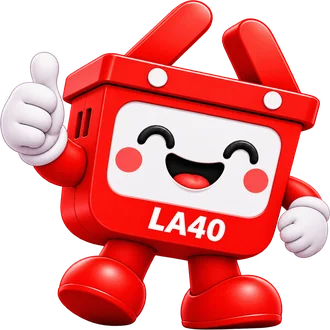

Mega Market La 40 › Opsi › Poses › Saludos y cariño
Saludos y cariño de Opsi
Opsi saluda, guiña, aprueba, hace una reverencia, lanza un beso, da un abrazo o hace un corazón.

Saludos y cariño
9 poses. Toca «Descargar» para bajar la pegatina.